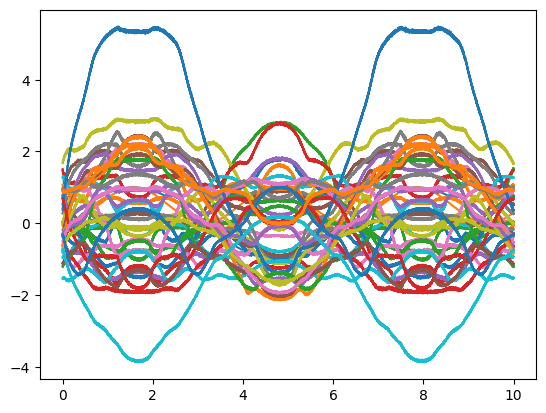

Weights and Connections#
WHen we have multiple groups of neurons, we then would want to connect them. This is done by assigning weights to the connections between the neurons, with the weights being the strength of the connection. For example, a weight of 0 would mean no connection, while a weight of 1 would mean a strong connection.
We can learn connection weights in a variety of ways, as we will go into later.
For now, we will initialize them randomly using np.random.randn(). This will give us a random number from a normal distribution with a mean of 0 and a standard deviation of 1.:
import numpy as np
np.random.seed(1) # Set random seed for reproducibility
class LIFCollection:
def __init__(self, n=1, dim=1, tau_rc=0.02, tau_ref=0.002, v_th=1,
max_rates=[200, 400], intercept_range=[-1, 1], t_step=0.001, v_init = 0):
self.n = n
# Set neuron parameters
self.dim = dim # Dimensionality of the input
self.tau_rc = tau_rc # Membrane time constant
self.tau_ref = tau_ref # Refractory period
self.v_th = np.ones(n) * v_th # Threshold voltage for spiking
self.t_step = t_step # Time step for simulation
# Initialize state variables
self.voltage = np.ones(n) * v_init # Initial voltage of neurons
self.refractory_time = np.zeros(n) # Time remaining in refractory period
self.output = np.zeros(n) # Output spikes
# Generate random max rates and intercepts within the given range
max_rates_tensor = np.random.uniform(max_rates[0], max_rates[1], n)
intercepts_tensor = np.random.uniform(intercept_range[0], intercept_range[1], n)
# Calculate gain and bias for each neuron
self.gain = self.v_th * (1 - 1 / (1 - np.exp((self.tau_ref - 1/max_rates_tensor) / self.tau_rc))) / (intercepts_tensor - 1)
self.bias = np.expand_dims(self.v_th - self.gain * intercepts_tensor, axis=1)
# Initialize random encoders
self.encoders = np.random.randn(n, self.dim)
self.encoders /= np.linalg.norm(self.encoders, axis=1)[:, np.newaxis]
def reset(self):
# Reset the state variables to initial conditions
self.voltage = np.zeros(self.n)
self.refractory_time = np.zeros(self.n)
self.output = np.zeros(self.n)
def step(self, inputs):
dt = self.t_step # Time step
# Update refractory time
self.refractory_time -= dt
delta_t = np.clip(dt - self.refractory_time, 0, dt) # ensure between 0 and dt
# Calculate input current
I = np.sum(self.bias + inputs * self.encoders * self.gain[:, np.newaxis], axis=1)
# Update membrane potential
self.voltage = I + (self.voltage - I) * np.exp(-delta_t / self.tau_rc)
# Determine which neurons spike
spike_mask = self.voltage > self.v_th
self.output[:] = spike_mask / dt # Record spikes in output
# Calculate the time of the spike
t_spike = self.tau_rc * np.log((self.voltage[spike_mask] - I[spike_mask]) / (self.v_th[spike_mask] - I[spike_mask])) + dt
# Reset voltage of spiking neurons
self.voltage[spike_mask] = 0
# Set refractory time for spiking neurons
self.refractory_time[spike_mask] = self.tau_ref + t_spike
return self.output # Return the output spikes
class SynapseCollection:
def __init__(self, n=1, tau_s=0.05, t_step=0.001):
self.n = n
self.a = np.exp(-t_step / tau_s) # Decay factor for synaptic current
self.b = 1 - self.a # Scale factor for input current
self.voltage = np.zeros(n) # Initial voltage of neurons
def step(self, inputs):
self.voltage = self.a * self.voltage + self.b * inputs
return self.voltage
t_step = 0.001
neurons_a = LIFCollection(n=50, tau_rc=0.02, tau_ref=0.002, t_step=t_step)
synapses_a = SynapseCollection(n=neurons_a.n, tau_s=0.1, t_step=t_step)
neurons_b = LIFCollection(n=40, tau_rc=0.02, tau_ref=0.002, t_step=t_step)
synapses_b = SynapseCollection(n=neurons_b.n, tau_s=0.1, t_step=t_step)
weights = np.random.randn(neurons_a.n, neurons_b.n)
outp = []
def step(inp):
a = neurons_a.step(inp)
b = synapses_a.step(a)
bw = b @ weights
c = neurons_b.step(bw)
d = synapses_b.step(c)
return (a, b, bw, c, d)
T = 10
times = np.arange(0, T, t_step)
def inp(t):
return np.sin(t)
for t in times:
outp.append(step(inp(t)))
def func(x):
return x**2
# decoder_a = getDecoders(neurons_a, func=func)
# decoder_b = getDecoders(neurons_b)
# # decoder_a = decoder_A
# # print(decoder_a.shape)
# # print(neurons_b.encoders.shape)
# weights = decoder_a @ [neurons_b.encoders.flatten()]
# # weights = np.random.randn(neurons_a.n, neurons_b.n)
# # print(decoder_a.shape)
outp = []
def step(inp):
a = neurons_a.step(inp)
b = synapses_a.step(a)
bw = b @ weights
c = neurons_b.step(bw)
d = synapses_b.step(c)
outp.append((a, b, bw, c, d, inp))
return d
T = 10
times = np.arange(0, T, t_step)
def inp(t):
return np.sin(t)
for t in times:
step(inp(t))
import matplotlib.pyplot as plt
a_out = list(map(lambda x: x[0], outp))
b_out = list(map(lambda x: x[1], outp))
bw_out = list(map(lambda x: x[2], outp))
c_out = list(map(lambda x: x[3], outp))
d_out = list(map(lambda x: x[4], outp))
inps = list(map(lambda x: x[5], outp))
plt.plot(times, inps)
plt.plot(times, [func(i) for i in inps])
# plt.plot(times, b_out @ decoder_a)
# plt.plot(times, d_out @ decoder_B)
# plt.plot(times, a_out)
plt.plot(times, [b * t_step for b in bw_out])
# plt.plot(times, bw_out)
# plt.plot(times, c_out)
# plt.plot(times, d_out)
plt.show()

%matplotlib inline
import math
import random
import numpy
import matplotlib.pyplot as plt
dt = 0.001 # simulation time step
t_rc = 0.02 # membrane RC time constant
t_ref = 0.002 # refractory period
t_pstc = 0.1 # post-synaptic time constant
N_A = 50 # number of neurons in first population
N_B = 40 # number of neurons in second population
N_samples = 100 # number of sample points to use when finding decoders
rate_A = 25, 75 # range of maximum firing rates for population A
rate_B = 50, 100 # range of maximum firing rates for population B
def input(t):
"""The input to the system over time"""
return math.sin(t)
def function(x):
"""The function to compute between A and B."""
return x * x
# create random encoders for the two populations
# encoder_A = [random.choice([-1, 1]) for _ in range(N_A)]
# encoder_B = [random.choice([-1, 1]) for _ in range(N_B)]
def generate_gain_and_bias(count, intercept_low, intercept_high, rate_low, rate_high):
gain = []
bias = []
for _ in range(count):
# desired intercept (x value for which the neuron starts firing
intercept = random.uniform(intercept_low, intercept_high)
# desired maximum rate (firing rate when x is maximum)
rate = random.uniform(rate_low, rate_high)
# this algorithm is specific to LIF neurons, but should
# generate gain and bias values to produce the desired
# intercept and rate
z = 1.0 / (1 - math.exp((t_ref - (1.0 / rate)) / t_rc))
g = (1 - z) / (intercept - 1.0)
b = 1 - g * intercept
gain.append(g)
bias.append(b)
return gain, bias
# random gain and bias for the two populations
# gain_A, bias_A = generate_gain_and_bias(N_A, -1, 1, rate_A[0], rate_A[1])
# gain_B, bias_B = generate_gain_and_bias(N_B, -1, 1, rate_B[0], rate_B[1])
gain_A = neurons_a.gain
bias_A = neurons_a.bias.flatten()
encoder_A = neurons_a.encoders.flatten()
gain_B = neurons_b.gain
bias_B = neurons_b.bias.flatten()
encoder_B = neurons_b.encoders.flatten()